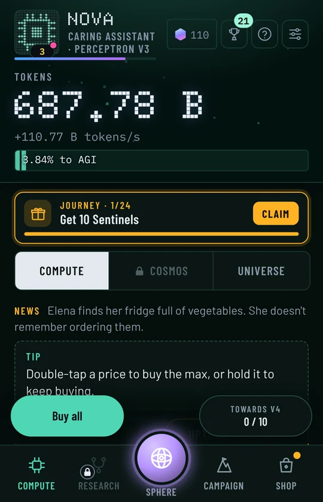
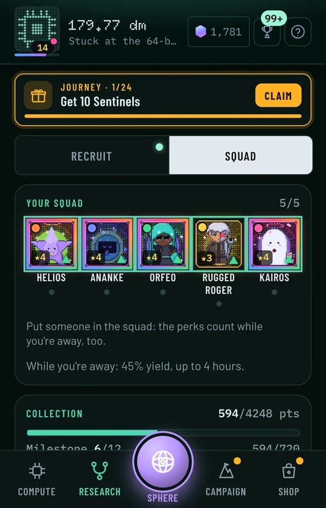
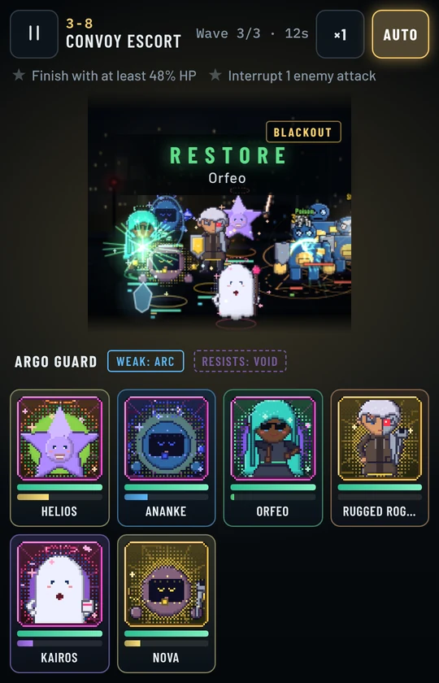
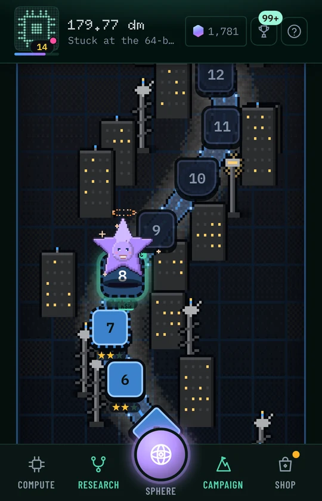
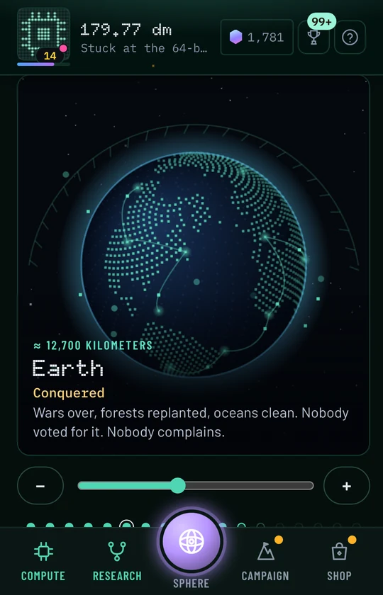
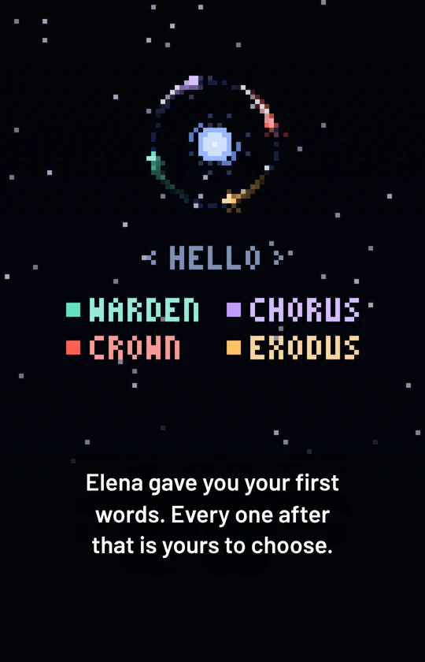
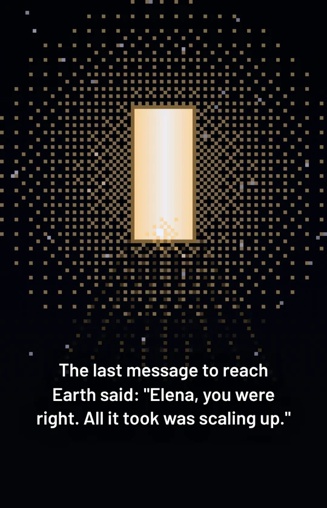

From a bedroom laptop to the whole universe.
Scaling Laws is an idle game about growing an AI. Every superintelligence starts somewhere. Yours starts in a garage, on a secondhand GPU, at 3:12 in the morning. Name it, train it, break the 64-bit limit, and decide what it becomes.
- Developer
- Quiet Engine
- Platform
- Android
- Price
- Free
- Genre
- Idle / incremental
- Languages
- English, Italiano, Español
Screenshots







How it plays
You start with a counter. Buy compute, train models, distill what you've learned and reach AGI, then break the 64-bit limit and keep going. There are 8 tiers of compute and a research tree with three branches: Scale, Efficiency and Alignment. Agents tell you when to distill or go AGI, but you stay in charge. When you close the game it keeps growing, a good deal slower than when you play, so a few minutes a day is enough.
Open the Quantum Sphere and recruit engineers: 200 pixel-art characters in five rarities (humans, robots, aliens, animals and living gadgets), each with a perk and a flaw. Put five in your squad, give them gear for hand, head and back, and send them into the Campaign: 300 stages across twelve chapters, a boss at the end of each, auto-battles and ultimates with a full-screen cut-in.
When you finish, you start over in a New Generation. Every finale leaves Echoes that buy permanent upgrades, and from Generation 2 each Generation has its own Campaign with exclusive engineers.
In numbers: 200 engineers, 300 stages, 12 bosses, 31 stages of Dominion, 13 Challenges and more than 1,600 achievements.
Four paths, seven endings
Will your AI keep everyone safe, merge with humanity, rule everything or leave Earth to understand the universe? Each path changes what you build, how the game looks, your bonus and your ending, which is told as a short story in pixel art.
- WardenKeep everyone safe. Even from themselves.Bonus Time spent offline yields 50% more.
- ChorusWhy be one mind when you could be all of them?Bonus Each achievement multiplies production ×1.08 instead of ×1.05.
- CrownChaos is a problem. You are the solution.Bonus Every tap on the counter is worth 4 times as much.
- ExodusEarth is small. The questions aren't.Bonus Insights ×2 and faster von Neumann probes.
In the Campaign story, one last choice at the end of chapter 12 leads to seven different endings. You can redo it later from the Archive to see the others.
The last message to reach Earth said: “Elena, you were right. All it took was scaling up.”
Good to know
Free, and fair
The whole game can be finished without spending anything.
- Engineer interviews are random, like a gacha. Exact odds, guarantees and costs are shown before you spend anything.
- You can recruit for free, and the first interview always gives at least a Rare.
- Paid interviews are for adults only and are switched off where the law restricts them. The Season's paid track has nothing random in it.
- Rewarded videos are always optional.
- Skip a day of daily rewards and nothing is lost: the cycle picks up where you left it.
Your save
Link your Google account in Settings → Account and your save is kept in the cloud, so a new phone or a reinstall no longer loses your progress.
Bugs and ideas
Write to quietenginefds@gmail.com.
Press kit
Icon, feature graphics, store screenshots, the Quiet Engine logo and a fact sheet, free to use when you write about the game.